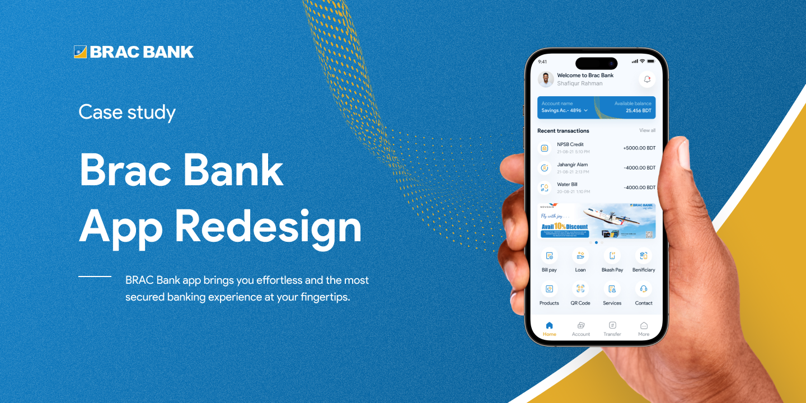
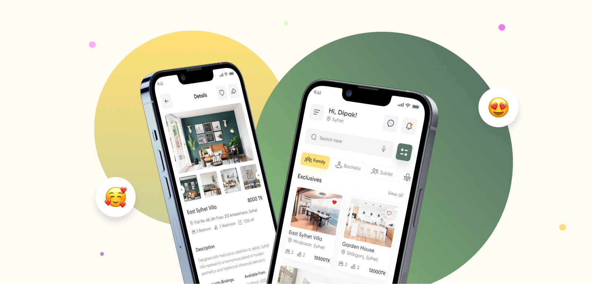

Designing fintech and banking products where clarity is non-negotiable.
Trained in Computer Systems and UX Design at Humber Polytechnic. I build high-contrast banking flows, complex ledger architectures, and scalable design token systems for users who just want to know where their money stands.
Three case studies, start to finish.
Walmart Credit Card App
A native app concept for the Walmart Credit Card balance, payments, and rewards in one place, replacing a browser-only login experience.

BRAC Bank Mobile App Redesign
A full redesign of BRAC Bank's mobile app. Unified accounts, a simplified transfer flow, and a Bangla-language experience.

RentFinder - Home Rental App
A premium home rental app for Bangladesh. Verified listings, map-first search, and a Bangla-language experience.
How to work with me.
My case studies already show how I design interfaces. This interactive console reveals how I actually operate, prioritize, and structure systems day-to-day. Click a prompt below or type your own.
The path wasn't a straight line.
Early Visual Design
Started with hands-on graphic and print design, marketing collateral, identity marks, banners, and layout design under tight turnarounds for small local businesses. Built a foundational instinct for visual hierarchy, typography, and clear communication under real deadlines.
Computer Systems & IT Engineering
Completed a Computer Systems Technician diploma, Google IT Support credentials, and NPower Canada's Junior IT Analyst program. Learned operating systems, networking architecture, troubleshooting, and Agile fundamentals, developing an understanding of how technical systems operate under the hood before stepping into interface design.
Freelance Product Design
Began consulting and delivering end-to-end UX/UI projects for startups and small enterprises globally conducting user research, wireframing workflows, and building responsive web and mobile interfaces that solve real operational friction.
UX Design Internship · Twinkle Creative
Assisted research initiatives and usability testing on mobile platforms. Built user journeys, wireframes, and interactive Figma prototypes alongside senior designers, gaining firsthand experience in structured agency workflows and collaborative product sprints.
UX/UI Designer · Twinkle Creative
Stepped into a full-time role owning interface design and design system architecture across client mobile and web applications. Led cross-functional handoffs, established accessibility guidelines, and worked directly with engineering teams to ensure pixel-perfect production delivery.
UX/UI Designer · Aero Design Agency
Designing scalable platform features, complex data-dense interfaces, and component systems. Focused on fintech workflows, navigation models, and high-clarity interaction patterns that hold up in real-world production environments.
UX Design Graduate Studies · Humber Polytechnic
Completing advanced graduate studies in User Experience Design at Humber Polytechnic, synthesizing technical systems engineering, years of industry product design, and formal human-centered research methodologies into a unified, rigorous design practice.
Little joys of my life.
-
01PlayingExploring the frontier in Red Dead Redemption 2 or surviving Resident Evil. It's my favorite way to reset.
-
02WatchingRarely missing a football match, or catching up on the endless journey of One Piece.
-
03WorldbuildingBuilding out a fantasy world for years. Same instinct as product design, just with dragons instead of dashboards.
-
04CuratingBlending audio and building the perfect playlists for late-night drives.
Got a problem worth solving?
Open to full-time roles, freelance work, and collaborations. Reach out if you need a designer who thinks in systems, not just screens.